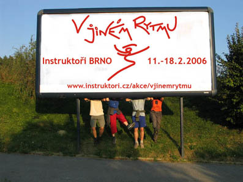
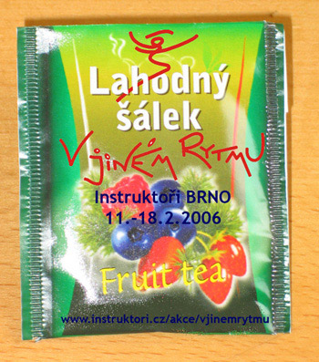
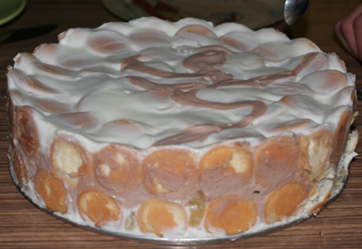

|
Těší se na Tebe instruktoři:
Jiří Tashi Vondráček
Hančí Dobešová
Niki Šimonová
Tomáš Sládek
Jan Šimi Šimsa
Bára Nováková
Oblíbený týmový recept: studená polévka Gaspacio
s koláčem Quiche a další
Oblíbená týmová činnost: Chození po horách
Oblíbený obor týmu: Gastroterapie
Oblíbený film: Motorkář (pozor - velikost 5,6MB)
Oblíbené umělecké dílo: Sněhulák
Oblíbená kancelářská potřeba: Europáska
Oblíbené zvíře: Oslík
A co ještě rádi dělají jednotliví členi týmu?
- fotí
- jí
- hledají novou hudbu
- potkávají zajímavé lidi a dozvídají se od nich nové věci
- pijí voňavý čaj
- vytváří zvuky
- leží na kokosech
- pozorují pračku a fandí slipům
- hýbají se
- jezdí vlakem
- jsou s druhými lidmi
- nechávají se masírovat
Už i tým V Jiném Rytmu má svoje billboardy:

Je kurz V Jiném Rytmu Váš šálek čaje??

A co takhle kousek dortu V Jiném Rytmu? Máte chuť?

nahoru
|